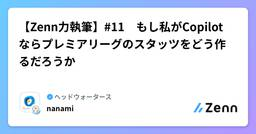

ヘッドウォータースのフィード
https://zenn.dev/p/headwaters
株式会社ヘッドウォータースのテックブログです。 AIエージェント、生成AI、Azure、GitHub Copilot、IoT、XR系などData&AIとApp modernizeに関して幅広く投稿します！
フィード

Waitlist登録からAPIキー発行まで：「Jev」を使えるようになるまでの手順
ヘッドウォータースのフィード
執筆日2026/9/19 Jevとは？Jev は TypeSafe AI が 2026年9月15日に早期アクセスで公開した System One Model という新カテゴリのモデルで、ソフトウェアが直接利用できる高速・構造化された判断を返すことに特化しているモデルです。テキスト生成を行わず、型付きの question を state に対して評価し、構造化された結果を直接返します。パース不要で、コードが分岐・ソート・ルーティングに使える型付き値と確率分布が得られます。質問プリミティブは3種類あります。Choice（リストから1つ選ぶ／choice・probabilit...
10時間前

【Zenn力執筆】#12 Rewriteしないと？！
ヘッドウォータースのフィード
はじめにゲームで遊んでいたときに、この技、意味あるのか？と思っていた少年時代の私は、「見る」ということを理解できていなかったのかもしれません。皆さんはポケモンの「みやぶる」という技を知っていますか。「みやぶる」は、相手の回避率に関係なく攻撃が当たるようになり、本来は攻撃が通らないゴーストタイプにも、ノーマルタイプやかくとうタイプの技が当たるようになる技です。子どもの頃の私は、攻撃すればいいのでは？と思っていました。わざわざ1ターン使ってまで相手を「みやぶる」意味が分からなかったのです。しかし今振り返ると、「みやぶる」という技は単なる補助技ではありません...
2日前

【Zenn力執筆】#11 もし私がCopilotならプレミアリーグのスタッツをどう作るだろうか
ヘッドウォータースのフィード
はじめに皆さんは占いは好きですか。古くからある占いとして血液型占いがあります。よく言われるのは、A型は几帳面B型はマイペースO型は大雑把AB型は変わり者などでしょうか。ちなみにO型の私からすると、大雑把扱いされるのはあまり納得していません笑なお、血液型と性格の関係に科学的根拠はないとされています（切実）！！今回は血液型占いの記事ではないので深く触れませんが、気になる方は参考記事をご覧ください。https://www.hiro-clinic.or.jp/gene/abopersonalities/ところで、この「血液型」という言葉を聞いたときに私は別の...
2日前

Unity CatalogのデータをOneLakeに保存する（Azure Databricks Storage）
ヘッドウォータースのフィード
Azure Databricks StorageとはFabric のテナント設定には 「ユーザーは、ストレージに OneLake を使用する Azure Databricks のストレージ項目を作成できます」 という項目があります。これは、Azure Databricks の Unity Catalog が、マネージドテーブルの保存先として Fabric の OneLake を使えるようにするための項目です。ドキュメント上は「Azure Databricks 向けの OneLake を基盤としたストレージ アイテム」と定義されています。https://learn.micros...
3日前

Presidio で個人情報（PII）の検出とマスキングをやってみる
ヘッドウォータースのフィード
執筆日2026/9/16 はじめにAIエージェントの開発をしています。その際にログをDBに保存する際に個人情報含むセンシティブな情報をマスキングしたいなと。Azure Languageを使って実装していますが、他に手段はないかを調査していました。その際に、Presidioを見つけました。どのようなものなのか気になったので調査しようかなと。https://github.com/data-privacy-stack/presidio やってみる 1. 環境構築仮想環境を作ってインストールします。python -m venv .venvsource .venv/b...
4日前

金融時系列の変化点検出を自己進化させるLLMエージェント「EvoTS-Agent」を解説
ヘッドウォータースのフィード
はじめに：LLMエージェントが同じ改善を繰り返してしまう理由LLMエージェントにコードを書かせて何かを最適化させるとき、こんな経験はないでしょうか。一度目の提案は良かったのに、二度目・三度目の「改善」でむしろスコアが下がる何度指示しても、同じアプローチを微修正するだけで根本的に違う方法を試してくれない複数回の試行錯誤の結果、良かったアイデアと悪かったアイデアがバラバラのまま、うまく統合されないこれはまさに、株価や信用スプレッドといった金融時系列データの「構造変化（レジームチェンジ）」を自動検出するAIエージェントが抱えていた課題そのものです。2026年8月に公開された...
4日前

アナログ派のDB初心者が2日でDP900に受かった 赤シート×Claude勉強法
ヘッドウォータースのフィード
前談AI分野の技術躍進すさまじく、デジタル化なんて当たり前のこのご時世、趣味で紙の辞書を引きつづけている者です。(子どもの頃からの習慣でかなり慣れているので、意外とウェブやAIでいちいち検索するより辞書引くほうが楽だったりします)もちろん書籍もだんぜん"紙派"。電子だとなんだか、私の場合、忘却曲線の傾きが大きいといいますか、数ヶ月後、数年後にぜんぜん頭に残らないのです。そんなアナログ派の私ですが、AI活用も大好きです。とくにClaudeが好きで、休日朝から晩までClaudeとやりとりしている日もザラにありますし、QOLを上げるための普段使いスキルをいろいろ作って便利に暮らしてお...
5日前

localStorage は書き込んだ直後にはディスクに保存されていない
ヘッドウォータースのフィード
端末をキオスク化するときなど、ブラウザに設定値を持たせて、次の起動でそれを読ませたいことがある。端末ごとの識別子や画面の初期設定を、例えば localStorage に入れておく。この書き込みを手順書やスクリプトに落とすと、最後にブラウザを閉じる工程が付く。ここで強制終了を選ぶ手順は珍しくない。ウィンドウを閉じてもプロセスが残る場合があり、確実に終わらせたいからだ。taskkill /F /IM msedge.exeところが、設定値を書いた直後にこれを実行すると、値が残らないことがある。開発者ツールで値が入ったことを確かめてから閉じても、結果は変わらない。実際に手順を何度...
6日前

「自信満々に間違える」AIをどう直す？ログ異常検知のキャリブレーション問題とLoRD
ヘッドウォータースのフィード
はじめに「モデルの精度は99%です」と言われると安心してしまいますが、その99%の裏に「間違えたときほど自信満々」という危険な癖が隠れていたらどうでしょうか。今回紹介する論文 Too Sure to Be Safe: Model Calibration for Reliable Log Anomaly Detection（2026年8月, IEEE ICDM 2026採択）は、まさにこの問題を扱っています。サーバーの大量ログから異常を検知するAIモデルは、近年LLMベースのものも含めて高精度化が進んでいます。しかし著者らは、「異常を見逃した（＝異常なのに正常と判定した）ケースで...
11日前
App Service - Easy Auth を使い Azure AI Search をユーザーの権限で検索できる仕組みを作る
ヘッドウォータースのフィード
執筆日2026/9/6 はじめに以前、Azure API Management を中間層に置いて On-Behalf-Of フローを組み、Azure AI Search をユーザー本人の権限で検索する構成を試しました。しっかり作るならあの形が正解なのですが、「社内向けの小さな検索アプリを App Service に置きたいだけ」という場面では、APIM を一段挟むのはコスト面でうーん...だなと。https://zenn.dev/headwaters/articles/38fce08d61a07aそこで今回は、App Service の組み込み認証（Easy Auth）...
14日前
AppService にEasy Authを組み込む方法
ヘッドウォータースのフィード
執筆日2026/9/4 Easy Auth とはApp Service および Azure Functions に組み込まれている認証 (ユーザーのサインイン) と承認 (保護されたデータへのアクセス提供) の機能です。認証コードをほとんど、あるいはまったく書かずに、Web アプリ・REST API・モバイル バックエンド・関数にサインインを追加できます。対応している ID プロバイダーは、Microsoft Entra、Facebook、Google、X、GitHub、Apple (プレビュー)、および任意の OpenID Connect プロバイダーです。 必要な...
15日前
Entra Agent IDでAzureリソースに認証・アクセスする
ヘッドウォータースのフィード
Microsoft Foundry で発行される Entra Agent ID（エージェント専用のID）を使って、Azureリソース（Azure Blob Storage）に認証・アクセスできるかを検証しました。本記事では、その検証手順と結果をまとめます。 やることFoundry上にHosted Agent（Blobコンテナー一覧を取得するツールを持つエージェント）をデプロイし、以下の2点を確認します。ネガティブテスト: Agent IDにStorageのRBACロールを付与していない状態でBlobアクセスが拒否されることポジティブテスト: Agent IDに Stora...
18日前
Azure CLI（az）と Azure Developer CLI（azd）の違いと使い分け
ヘッドウォータースのフィード
実務や検証を進めていく上で、Azureは結構コマンドラインから操作する事が多い(?)と感じたので、az（Azure CLI）と azd（Azure Developer CLI）について調査・学習しました！ 結論観点Azure CLI（az）Azure Developer CLI（azd）目的Azure リソースの作成・管理（リソース単位の操作）アプリケーションのプロビジョニングとデプロイの高速化（プロジェクト単位のワークフロー）抽象度低い（1 コマンド = 1 操作）高い（1 コマンドで IaC 実行〜デプロイまで）主な利用者インフラ管...
19日前
画像生成AIの"データの作り方"が変わった話 ― Alibabaの「能力駆動型データ基盤」を読む
ヘッドウォータースのフィード
はじめに「モデルのアーキテクチャを工夫する」よりも「学習データの作り方・与え方を工夫する」ほうが効くーーそう言われても、正直ピンとこない人が多いのではないでしょうか。今回紹介するのは、Alibaba GroupがarXivに投稿した論文 「From Corpora to Co-Evolving Capabilities: Capability-Centric Data Design for Generalist Image Generation」（arXiv:2608.18076）です。この論文がやっていることを一言でいうと、「タスクごとにデータセットを作る」のをやめて、「AI...
19日前
Azure - Azure AI Userが表示されない？
ヘッドウォータースのフィード
執筆日2026/8/31 はじめにMicrosoft Foundryのプロジェクトを触っていて、Azure ポータルの「アクセス制御 (IAM)」からロールを割り当てようとしたときのことです。Azure AI User を検索したのですが、候補に出てこない..なぜ？ 結論廃止されたわけではなく、表示名がリネームされていたというだけでした。 何がどう変わったのかFoundry 関連の RBAC ロールは、以下のように名前が変わりました。旧ロール名現在のロール名Azure AI UserFoundry UserAzure AI Owne...
19日前
【Zenn力執筆】#10 発想の種を記事へ育てる方法
ヘッドウォータースのフィード
はじめに大学時代、私は教職課程を履修していました。模擬授業を行う機会も多く、そのたびに授業づくりについて様々なことを学びました。その中でも今でも印象に残っている言葉があります。「授業の良さは導入で決まる。」当時、その言葉を口にした教授のことは正直あまり好きではありませんでした。しかし、模擬授業の回数を重ねるうちに、その言葉の意味を少しずつ理解するようになりました。どれだけ良い内容を用意していても、最初に興味を持ってもらえなければ最後まで聞いてもらえません。逆に、導入で興味を持ってもらえれば、その先の内容にも耳を傾けてもらえます。私は技術記事を書くようになった今で...
20日前
Azure Databricks - Entra ID の認証情報でAzure Databricks のエージェントを外部から実行する
ヘッドウォータースのフィード
執筆日2026/8/29 やりたいことAzure Databricks 上に構築したエージェントを、ローカル環境（外部アプリケーション）から Entra ID の認証情報を使って呼び出したい。このとき、エージェントを実行できるかどうかは 呼び出したユーザー自身の権限 で決まるようにしたい。つまり、Serving エンドポイントに対する権限を持つユーザーは実行でき、持たないユーザーは実行できない、という状態を作りたいなと。これを実現する手段として、Databricks の OAuth トークンフェデレーション（アカウント全体） を使います。Entra ID が発行した J...
21日前
Azure Databricksでエージェントを作ってAPI経由でローカル実行する
ヘッドウォータースのフィード
執筆日2026/8/28 やることAzure Databricksでエージェント作成してAPI経由で実行してみようかなと。 前提Azure Databricksをデプロイ済みであること 手順 エージェント用のドキュメントをカタログに登録カタログをクリックdefault配下にフォルダーを作成するフォルダーに以下のPDFをuploadするhttps://global-assets.irdirect.jp/pdf/tdnet/batch/140120260814521497.pdf エージェントを作成AI/ML>エージェントをク...
22日前
Microsoft FoundryのAI ゲートウェイでトークンの「制限」と「クォータ」を設定する
ヘッドウォータースのフィード
執筆日2026/8/27 やること同一サブスクリプション配下に Microsoft Foundry の Project がいくつかあります。各 Project でモデルのトークン制限をプロジェクトに設定しようかなと。 前提Azure API Management をデプロイしていることMicrosoft Foundry、Project をデプロイしていること 「制限」と「クォータ」の使い分けFoundry の AI ゲートウェイのトークン管理には「制限」と「クォータ」の 2 つのタブがあります。抑える対象が違うので、目的に応じて使い分けます。制限...
24日前
AIエージェントは「賢いモデル」より「賢い仕組み」で決まる - AutoDesign論文を実務目線で読む
ヘッドウォータースのフィード
はじめに「同じClaude CodeやGPT-5.5を使っているのに、なぜかあのチームのAIエージェントだけ成果物のクオリティが高い」そんな経験、ありませんか？2026年8月に公開された論文 「AutoDesign: Meta-Harness Optimization for Long-Horizon Agentic Design」（arXiv:2608.13560）は、この「差」の正体を構造的に説明してくれる論文です。一言でいうと、この論文が言っていることはこうです。モデルの性能を上げるのではなく、モデルの「周りの仕組み（ハーネス）」自体を自動で育てていけば、安いモデル...
25日前